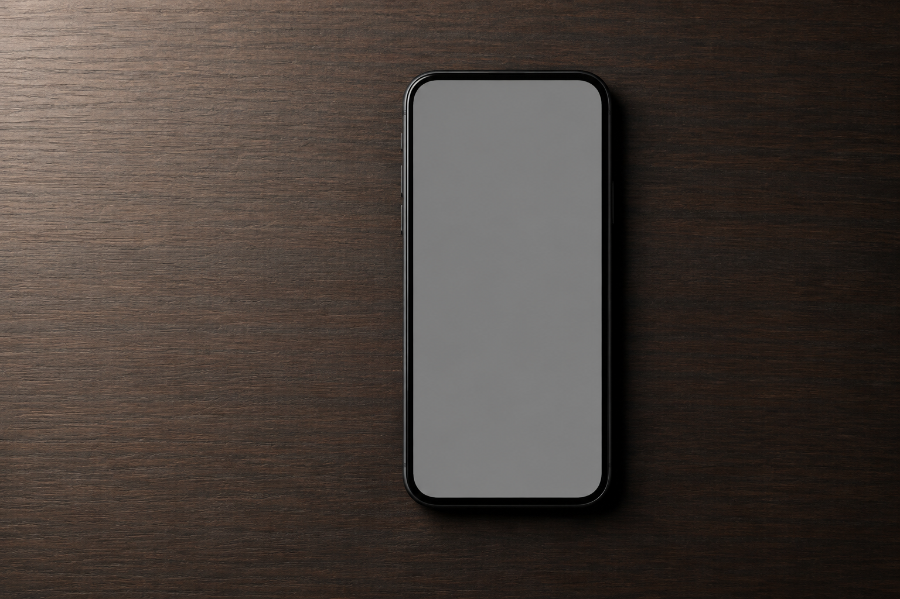
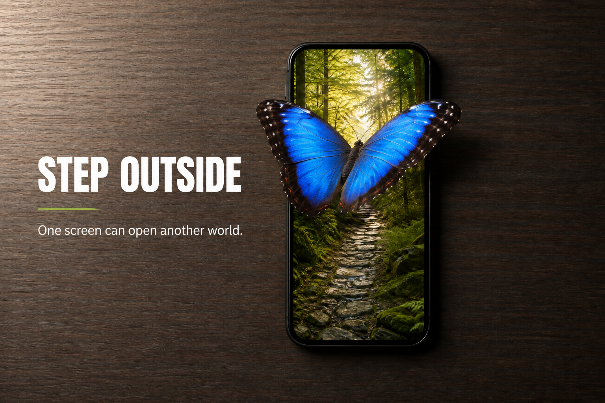
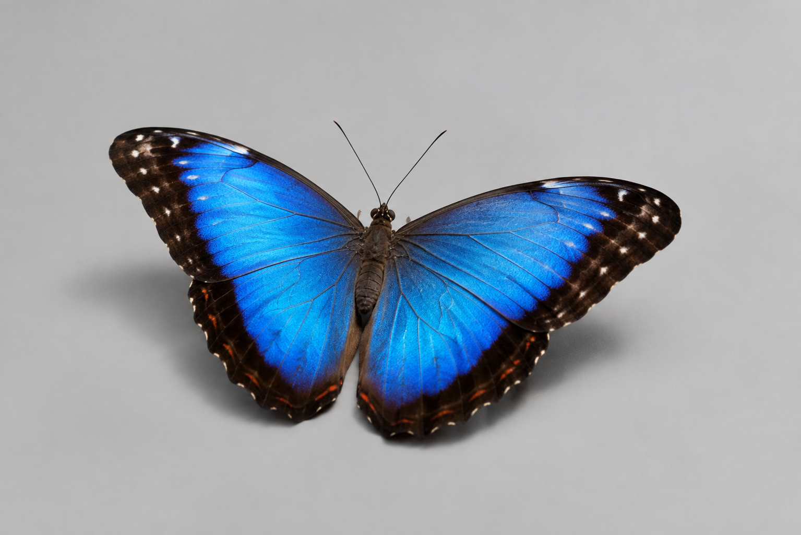

01 · Phone base
The background and frame for both tiers.
Download phoneLook behind polished ads, learn the six moves that make a composite believable, and build a phone portal. Then make the illusion break its frame with the classic out-of-bounds effect.

Two-stage target: Tier 1 builds the portal. Tier 2 adds the butterfly with a refined, editable mask.
Big question: When is photo manipulation creative communication—and when can it become deception?
The three student source images are bundled with this lesson. Download the ZIP once, unzip it, and place the images inside your project’s 01_assets folder. No image search or account is required.

The background and frame for both tiers.
Download phonePlaced and masked inside the phone screen in Tier 1.
Download forest
Selected, refined, and masked for the Tier 2 out-of-bounds effect.
Download butterflyIn pairs, choose two product images and two issue images. For each, name the message, the audience, and at least two edits you think were used. Click Reveal a possible build only after you commit to a guess.
Cutout + many layers + scale + contact shadows + colour grade. Ask: what makes the tiny city feel attached to the shoe?
Selection + mask + warp + blend mode + matched blue tones. Ask: is the bottle selling something or warning us?
Placed image + screen selection + layer mask + transform + glow. This is the closest cousin of today’s build.
Multiple cutouts + masks + transform + motion/sharpness choices + colour match. Ask: which elements may have been photographed separately?
Hand selection + miniature composite + scale + melt detail + cold grade. The visual metaphor carries the argument.
Darkened background + repeated icon layers + blur + spotlight + contrast. Notice how hierarchy tells your eye where to begin.
Shape mask + forest texture + split tonal grade + smoke layers. Ask what becomes less effective if every detail is literal.
Separate subject layers + underwater grade + transparency + matched light rays + depth blur. The edit creates a cause-and-effect story.
Open one or two for comparison. These links are optional; the eight-image gallery above works offline.
Photoshop has many tools, but beginners can read a surprising amount of professional work by looking for the same small set of decisions.
Believability test: edges + perspective + light direction + shadow softness + colour temperature.
Positions a selected layer. If the wrong thing moves, select the correct layer first.
Defines where an edit can happen. Marching ants are a boundary, not content.
White reveals; black conceals. Reversible beats deleting pixels.
Scales, rotates, or distorts one layer. Hold the corner and watch proportion.
Adds editable words and graphic accents that build hierarchy.
Changes tone and colour non-destructively, often clipped to one layer.
Use the checkboxes like eye icons in the Layers panel. Then drag the mask slider. Notice that a mask controls visibility without destroying the forest image.
0% hides the forest; 100% reveals it.
TIER 1 · REQUIRED FOUNDATION Work in order and stop at every checkpoint. Menu names match current desktop Photoshop; screenshots may differ slightly by workspace or operating system.
Create Photoshop_Foundations_YourName with 01_assets, 02_working, 03_exports, and 04_evidence. Copy 01-phone-base.png and 02-forest-insert.png into 01_assets.
Choose the phone image. Press F if you want to cycle screen modes, and Ctrl/Cmd + 0 to fit the image on screen.
Save as 02_working/Step_Outside_YourName_v01.psd. Keep Layers enabled.
Choose Place. Photoshop adds the forest as a Smart Object with transform handles. Press Enter/Return once to confirm.
Lower Forest opacity to about 60% so you can see the phone. Drag a corner to scale; move the forest until the bright path sits inside the phone. It must cover the entire gray screen. Press Enter, then restore opacity to 100%.
Zoom in. Click carefully around the inside edge of the gray screen. Use several points to follow each rounded corner. Click the first point to close. Choose Select → Modify → Feather → 1 px.
Click the Forest layer’s eye, then its image thumbnail. At the bottom of Layers, click the rectangle-with-circle Add Layer Mask icon. Press Ctrl/Cmd + D to deselect.
Create Curves above Forest. In Layers, right-click the Curves layer and choose Create Clipping Mask. Make a gentle S-curve: slightly lower shadows and slightly lift highlights. Optional: add Vibrance +10.
Type STEP OUTSIDE in a bold sans serif, white, large enough to lead the page. Create a second text layer: One screen can open another world. Keep it smaller and left-aligned.
Sample a bright green from the forest. Choose Rectangle Tool, set Shape mode, and draw a short thin rule between the headline and subline.
Save the PSD. Export 03_exports/Step_Outside_YourName.jpg at JPG quality 80–90, sRGB, same pixel size. Take one screenshot showing the full canvas and Layers panel; save it in 04_evidence.
Complete Steps 0–10. Match the portal exemplar and prove that phone, forest, mask, adjustments, type, and accent remain editable.
Continue to Steps 11–17. Cut out the butterfly, refine its mask, and place part of it beyond the phone’s edge.
After Tier 2, replace the butterfly with your own rights-safe subject. Keep every layer editable and defend the placement, edge, and shadow choices.
TIER 2 · OUT OF BOUNDS The illusion works because the butterfly is cut out on its own layer, placed above the phone, and partly concealed with a layer mask. You are controlling what is in front, what is behind, and what remains editable.
Loading the source images…
Target read: the body begins in the forest, the wings cross the bezel, and a small hidden edge suggests that the phone frame sits between parts of the subject.
Copy the butterfly into 01_assets, place it above all current image layers, and press Enter/Return. Rename the layer Butterfly.
With the Butterfly image thumbnail selected, choose Select Subject. Inspect the marching ants, then click Add Layer Mask. Do not erase the gray background.
Choose On Black or On White view. Use the Refine Edge Brush only around antennae and tricky wing edges. Start with Radius 1–2 px and Decontaminate Colors off. Output to Layer Mask.
Scale and move the butterfly so its body begins inside the upper half of the forest while at least one wing clearly crosses a phone bezel. Keep the phone, headline, and forest readable.
Zoom to 100–200%. With a small firm brush, paint black on the mask over one tiny lower section that should pass behind the phone frame. Press X to switch to white and restore anything you hide by mistake.
Confirm Butterfly sits above the phone and forest layers. If needed, add one subtle Drop Shadow: match the existing down-right direction, keep opacity low, and use a soft edge. Toggle the eye icon to decide whether it improves depth.
Save Step_Outside_YourName_v02.psd so Tier 1 remains recoverable. Export Step_Outside_OOB_YourName.jpg. Capture a screenshot with the canvas, Butterfly layer, and its mask visible.
Answer without looking back first. Then check your score and repair any gaps.
1.4 Create persuasive/entertaining solutions with electronic tools.
1.5 Social impacts of communication technology.
4.1 Principles/elements of design.
4.3 Typography for graphic design.
4.4 Communicate through manipulated images and words.
4.5 Output settings for web images.
1.1 Apply image/text manipulation techniques.
1.2 Examine cultural, historical, emotional impact.
1.3 Understand image-production procedures.
1.4 Apply art/design principles.
1.5 Construct images that communicate ideas.
4.2 Examine form, content, audience, and purpose.
Tier 1: portal PSD, JPG, layer screenshot.
Tier 2: refined subject mask, crossing/tucked edges, v02 PSD, defence.
Conversation: gallery claims + exit explanation.
Assessment: workflow and explanation before polish.
{kind=link}
{kind=link}
{kind=link}